![[Full alt text]](images/Navigating%20to%20Admin%20-%20Appointment%20Admin.gif)
Meddbase is a complex, multi-layered EMR system, capable of accommodating a wide variety of workflows and business models ranging from small practices, straightforward setup and only a couple of people using the application, through to global enterprises with thousands of users and nuanced workflows and business requirements.
Meddbase provides a high number of configuration options allowing the application to adapt to complex business scenarios, as well as a host of default settings that it can fall back on when complexity is minimal.
Meddbase can be and is used in Primary Care, Secondary Care as well as in Occupational Health.
This article is the 2nd in a series of articles providing overview and details of setup and configuration steps required for Practice Management, which focuses on the application of the Meddbase system in Primary and Secondary Care.
Click here for Part 1.
Click here for Part 3.1.
Click here for Part 3.2.
Click here for Part 4.
Click here for Part 5.
This article will walk you through the following steps:
Additional configuration options relevant to specific Service Types
A very important task in the process of configuring Meddbase is to create appointment types. Appointment Types will be the 'blocks' booked on clinicians' schedules.
To configure an appointment type, the following process applies:
The Appointment Configuration dialog window allows many aspects* to be determined for an appointment type:
*There are many OH-specific configuration aspects for an appointment type. Click here for more details. These aspects will be omitted in this article.
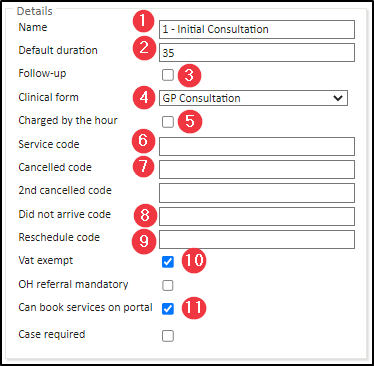
1 When this appointment type is consumed and charged for it appears as a Billing Item on an invoice. It can appear under a different name (Safe Name) on invoices by using the Safe Name Rule.
2 The Patient Portal is a system feature. Click here for more details.
3 Meddbase has a default Clinical form. Additional Clinical forms can be built by MMS and uploaded to your chamber. Please contact the Client Account Management Team on accountmanagement@meddbase.com to discuss your requirements and associated costs.
4 Multiple Clinical forms can be used simultaneously in Consultation in parallel episodes.
5 Price set in Billing Rules x Appointment Length, e.g. Price set in Billing Rules = £100; Appointment Length (booked) = 15 mins; Price charged: £100 x 0.25 (15 mins = 0.25h) = £2
6 Automating charges to the patient/patient's payer for cancelling, not arriving for and/or rescheduling an appointment require the use of the Cancellation Charges Rule(s) in your systems' Billing Rules. The system informs the user performing the action that it triggers a charge, but the user has the option to complete the action without charging the patient/patient's preferred payer
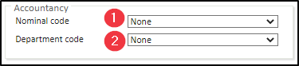
*Click here for more details on integrating with Xero.
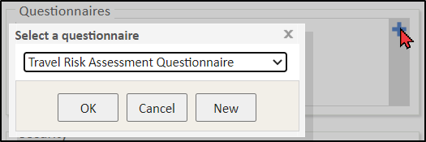
Add a questionnaire by clicking the + button. Questionnaires* selected here will be sent to the Patient Portal for patients to fill out prior to arriving for the appointment.
*Questionnaires are built, based on client requirements, by Meddbase Solution Engineers and uploaded to the relevant chamber where they can be selected. If you require questionnaire(s), please reach out to the Client Account Management Team on accountmanagement@meddbase.com
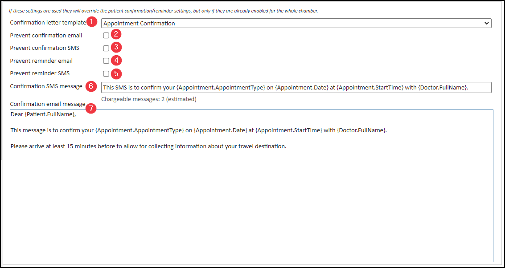
1 The template to be used here must be created first in the Templates section of the Start Page. Click here for more details.
2 Appointment Confirmation and Reminder email and SMS messages can be enabled Admin > Configuration > Task Checker by ticking the relevant email/SMS checkbox. Generic email and SMS messages can be defined there as well using a combination of free text and template code.
3 Template Code enables you to insert placeholders into templates and/or automated email/SMS messages, that can be used to produce an output (document or sent message) which incorporates values from a record, e.g. Patient and appointment details, clinical data and much more
This section allows adding a message that will be displayed as an on-screen pop-up to the Meddbase user booking this appointment type. The user must accept the message before continuing.
The message:
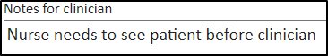
The output:
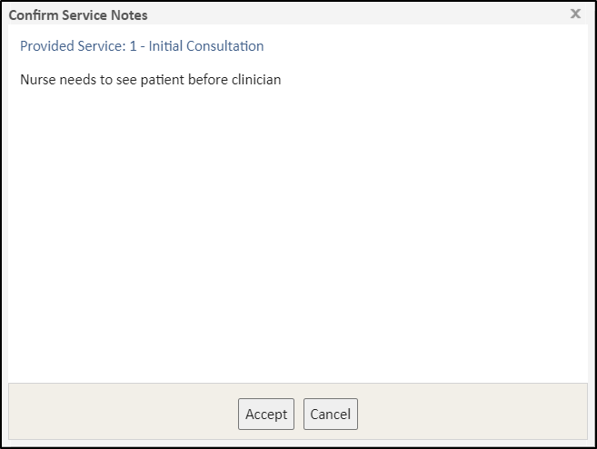
This section allows adding a message that will be displayed on the Patient Portal under this appointment type name when it's selected for booking by the patient.
The Patient Portal is a system feature and requires additional setup. Click here for more details.
The message:
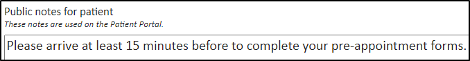
The output:
![[Full alt text]](images/Meddbase%20Patient%20Portal%20-%20notes%20for%20patient.png)
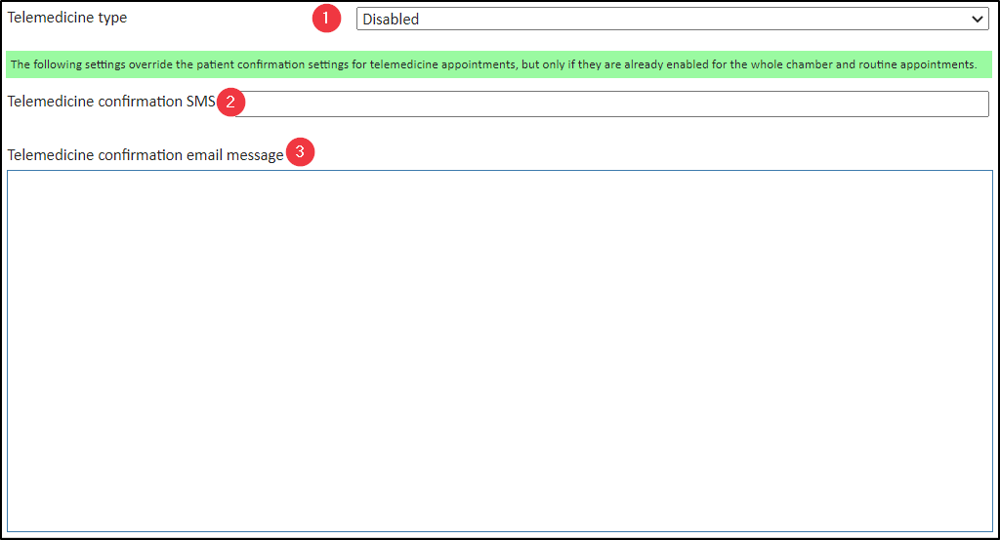
This section allows enabling this appointment type for Telemedicine*:
*Telemedicine is a system feature and requires additional setup in Meddbase. Click here for more details.
![[Full alt text]](images/Telemedicine%20enabled%20by%20default.png)
![[Full alt text]](images/Telemedicine%20mandatory.png)
*Appointment Confirmation must be enabled for the chamber in Admin > Configuration > Task Checker. Furthermore, the message configured here will be sent for Telemedicine appointments instead of the message configured in Admin > Configuration > Telemedicine > Telemedicine patient appointment confirmation override.
Meddbase provides the ability to split patient medical record (e.g. OH vs GP) by means of assigning separate Medical Certificates to different Appointment Types, thus protecting the clinical notes, documents etc. captured/created during the respective appointment type. If Medical Certificate(s) are in use, a Meddbase user will have access to the part of the patient's medical record according to their permissions on the respective certificate(s).
Click here for more details on Medical Certificates
Click here for a detailed article on Split Medical Record.
Another aspect of configuration is governed by Service Management, where Modules, PACS services, Procedures, Products, Tests and Vaccinations you wish to offer can be defined.
Meddbase can accommodate various workflows and since different providers have different ways of providing services and different workflows apply to them, there is no right or wrong way to configure appointment types and services. Some providers only configure appointment types and no services, others configure a handful of core appointment types and configure all other services in Service Management, e.g. as Modules.
How to create a new service type?
When anew service is created, there are common values that can be applied for all service types. There are additional settings that are relevant. To begin to configure a new service type, from the Start Page, navigate to Admin > Service Management, hit New and select the service type you'd like to create.
![[Full alt text]](images/Service%20Management.gif)
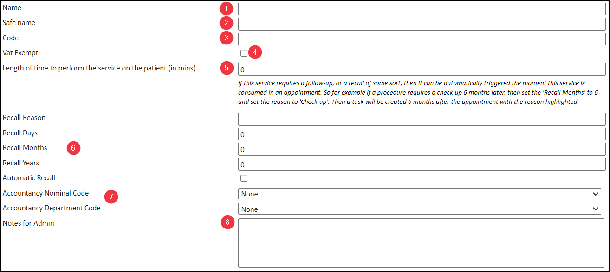
There are common configuration options for all service types. For each service type you can:
From here you can:
The below sections describe configuration options that are not common and are available for specific Service Types:
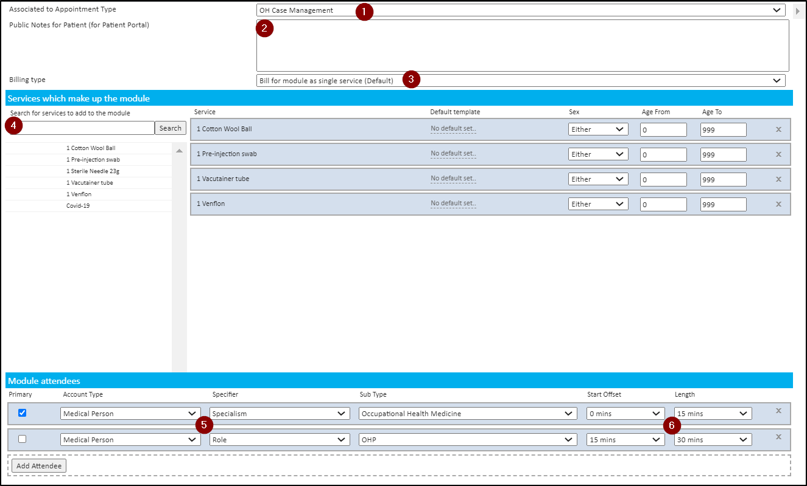
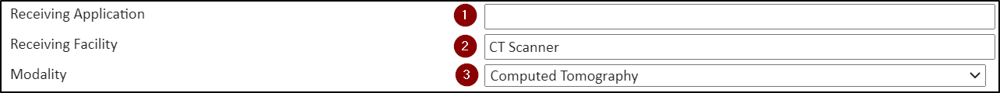

1 The above requires 'service reminder' to be enabled under Admin>Configuration>Task Checker
2 Meddbase supports electronic pathology request and/or response with TDL and HCA laboratories in the UK. Non-UK laboratories are not supported for electronic request/result and a manual process would apply.
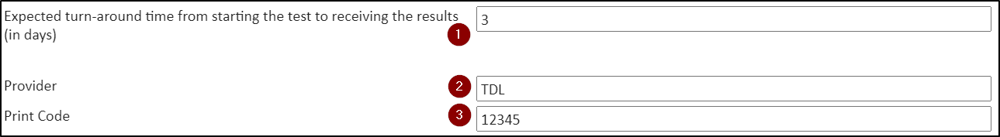
This process is very similar to creating a new service (as described above). To do this:
The Service Type characteristic is then updated.
Another configuration aspect is adding and configuring Work Types in your chamber.
Work Types enable utilising the Work section on the Start Page and allow generating and assigning Work Items to individual users and/or groups of users. The way the Work Type is configured determines the behaviour of the corresponding Work Items. Work Items are displayed to the relevant user(s) in separate inboxes labelled according to the Work Type.
Each Work Type is connected to a specific workflow or integration and may be a part of a larger setup. Some Work Types are default, others can be added to your chamber setup and their behaviour can be influenced. Furthermore, users meant to be involved in these workflows and responsible for specific work need to be members of a relevant Role Group
Click here for more details on Role Groups and associated workflows/work.
Work Types include:
To add a new Work Type:
Meddbase allows setting up automatic appointment reminder email and/or SMS messages to be sent to patients a set number of days prior to the appointment start time, at a specified time of the day. These messages are set up in Admin > Configuration > Task Checker.
At the same time an email can be sent to your Admin team and an Appointment Reminder work item can be generated and can be viewed by clicking the relevant section from the Start Page.
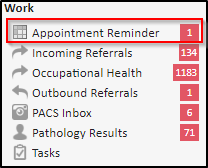
When an internal referral is made within your Meddbase chamber, or another chamber linked to yours in a Referral Network sends you a referral, a new work item is generated and can be viewed by clicking the relevant section from the Start Page.
Click here for more details on setting up a Referral Network.
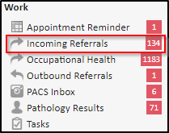
When an Outbound Referral is made either electronically, internally within your Meddbase chamber, externally to another chamber linked to yours in a Referral Network or to an external provider via email/print route, a new work item is generated and can be viewed by clicking the relevant section from the Start Page.
Click here for more details on setting up a Referral Network.
Click here for more details on sending outbound referrals.
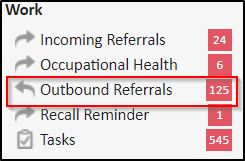
When an invoice with an outstanding balance is generated via an appointment or directly via a Company or Patient Record page(s), new work item is generated and can be viewed by clicking the relevant section from the Start Page.
Click here for more details on Working with Outstanding Debt.
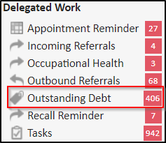
The PACS service sends HL7 requests to imaging providers and receives HL7 images/reports from them. These images/reports can be viewed as work items by clicking the relevant section from the Start Page.
Click here for more details on configuring this Work Type.
Click here for more details on setting up Multipart PACS Services.
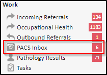
Meddbase currently interfaces with The Doctor’s Laboratory (TDL) and HCA Laboratories. When a pathology result is returned to Meddbase electronically, a new work item is created and can be viewed by clicking on the relevant section from the Start Page.
Click here for more details on configuring this Work Type.
Click here for more details on Requesting Pathology Results.
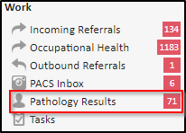
Meddbase allows setting up recall reminder email message to be sent to patients a set number of days prior to the recall due date, at a specified time of the day.
These messages are set up in Admin > Configuration > Task Checker.
At the same time an email can be sent to your Admin team and an Recall Reminder work item can be generated and can be viewed by clicking the relevant section from the Start Page.
When a test result is not returned within the expected turn-around time (in days) from starting the test, and can be viewed by clicking on the relevant section from the Start Page.
Click here for more details on Service Management (configuring an expected turn-around timeframe for Tests)
Tasks are used when you want to create an item of work, and either assign it to another user, group or simply add it to your own list.
You can view tasks by clicking on the relevant section from the Start Page.
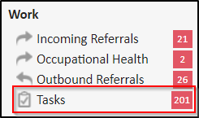
*Users meant to be involved in the above workflows and responsible for specific work need to be members of a relevant Role Group. Click here for more details on Role Groups and associated workflows/work.